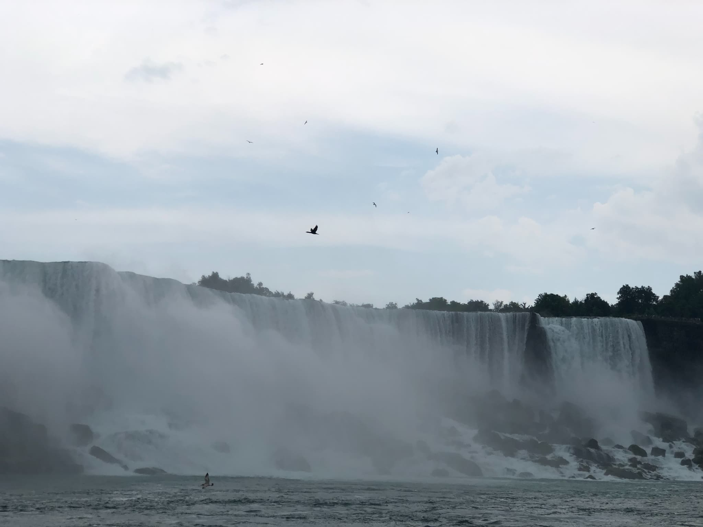
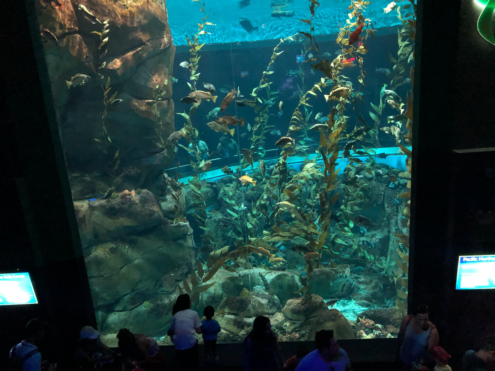
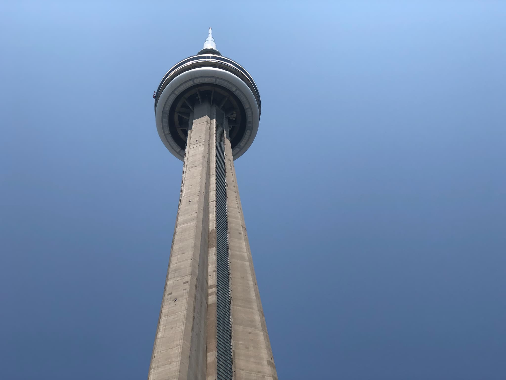

カナダの名所 — ナイアガラの滝・バンクーバー水族館・トロントタワー
ナイアガラの滝（Niagara Falls）

世界三大瀑布の一つで、カナダとアメリカの国境に位置します。夜にはライトアップも行われ、迫力と美しさを兼ね備えた観光名所です。スコールという突発的な雨がよく降るので傘は持って行ったほうがいいでしょう。近くのお土産屋さんで写真も買えます。
バンクーバー水族館（Vancouver Aquarium）

カナダ最大級の水族館で、イルカやラッコ、クラゲなど多彩な展示が楽しめます。教育的な展示も多く、子どもから大人まで人気です。大阪の海遊館とは違い何もかもがダイナミックなサイズです。写真の水槽はよく見ると人の何倍もあるサイズで欧米味を感じます。
トロントタワー（CN tower）

トロントにある高さ553メートルのタワーです。オンタリオ湖やナイアガラの滝が見渡せます。東京タワーよりも高さ的には低いですが、自身がない土地特有のデザイン性があって、エッジウォークなどのアクティビティも楽しめます。